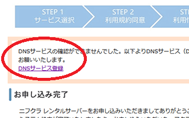
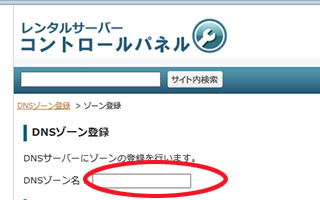
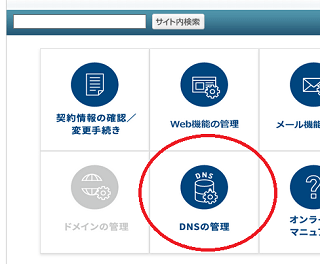
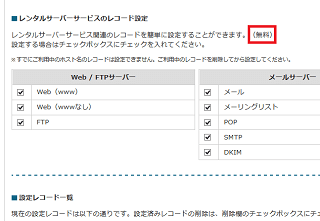
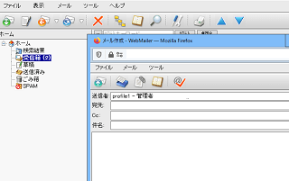
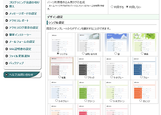
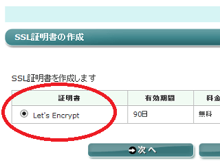
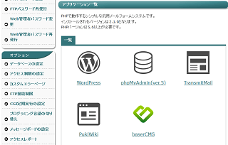
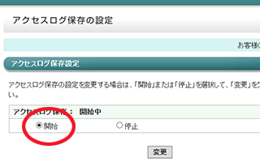

富士通グループ運営のニフクラ レンタルサーバー
ニフクラは、富士通クラウドテクノロジーズ運営による法人向けのサービスです。
ニフクラで提供されているサービスには、クラウドやビジネスメールなどさまざまありますが、法人向けのレンタルサーバーには「ニフクラ レンタルサーバー」があります。
こちらは1999年3月から運営の老舗レンタルサーバーとなっており、富士通グループの技術が結集した法人向けサーバーのため、安心して利用することができます。料金は初期費用5,500円（税込）、月額料金3,080円（税込）で利用することができます。
ニフクラの主なサービス一覧
もともとニフティは富士通の子会社でしたが、2017年4月1日以降、クラウド中心の事業（富士通クラウドテクノロジーズ株式会社）と個人向けの事業（ニフティ株式会社）に分社化され、現在のニフティはノジマの完全子会社となっています。
そのため、現在のニフクラ（旧ニフティクラウド）はニフティではなく、富士通クラウドテクノロジーズによって運営されています。
このニフクラでは法人向けのさまざまなサービスが提供されていますが、主なサービスには以下のものがあります。
■主なサービス一覧
- クラウドサービス
- 法人向けレンタルサーバー → ニフクラ レンタルサーバー
- ビジネスメール
- メールゲートウェイ
- データデザインサービス
- mobile backend
- WEB販促の窓口
これらのサービスを実際に利用する際は、まずはニフクラIDを取得して、それぞれのサービスを契約する流れになります。レンタルサーバーのみを契約する際にも、まずはニフクラIDを取得されるとよいでしょう。
ドメインDNSの設定方法
実際に利用する際、ドメインをニフクラで取得して管理すると簡単ですが、他社で管理したままでも使用することができます。その際はニフクラのDNSサービスを使用すると便利です。
■ドメインが他社管理の場合
他社でドメインを管理している場合、申し込みの際に「DNSゾーン登録」をしておくことをおすすめします。

後からでも設定できるのかは不明ですが、こちらを登録しておかないとコントロールパネルの「DNSの管理」が使えないはずです。

当サイト運営者は利用するドメイン名にて、wwwなしの「example.co.jp」の形で登録しておきました。この登録をする際にドメインの所有権を認証する必要がありますが、指定された認証用のネームサーバーを使用すれば簡単かと思います。
次に、コントロールパネルの「DNSの管理」の箇所からDNSの設定をしますが、上記の「DNSゾーン登録」をしていないとこちらの機能は使えないはずです。

このニフクラのDNSは、標準的なウェブやメールを使用する分には「無料」で利用できますが、DNSレコードを追加で利用する際は有料になるようです。

設定が完了したのち、「doc_root」フォルダなどにファイルをアップロードすれば、ホームページが表示されるはずです。
ニフクラレンタルサーバーの主な機能
法人のサイト運営に必要な機能は全てそろっていますが、特にメール機能については高機能と感じました。
■メール機能
法人向けのメールのため、誤送信チェックや除外ドメインの設定などができて便利です。ウェブメールも普通に使えました。

■メールフォーム
会社サイト運営に便利な高機能なメールフォームも利用できます。

■無料SSL「Let's Encrypt」
無料SSLの「Let's Encrypt」も普通に利用できました。当サイト運営者は「wwwあり・なし」の両方で登録しましたが、どちらかだけでも問題ないかと思います。

設定が完了したのち、「ssl_root」のフォルダにファイルをアップロードすると表示されるはずです。
■CMSの簡単インストール
WordPressなどのCMSを簡単にインストールすることができます。

■アクセス解析
アクセスログは保存設定をしないと保存の開始がされないため、サーバー契約をした際に保存設定しておくことをおすすめします。

アクセス解析ツールは「awstats」を利用できました。
そのほか、ホームページの制作代行サービスもあり、WEB制作の相談などにも対応しています。法人向けサイトを運営される場合は、こちらのニフクラレンタルサーバーを検討されてみることをおすすめします。
法人向けレンタルサーバー一覧
- お名前.comサーバー （GMOグループ）
- エックスサーバービジネス （当サイトはこちらを利用中）
- ニフクラ レンタルサーバー （富士通グループ）
- ＣＰＩ （KDDIグループ）
- アルファメール （大塚商会）
- iCLUSTA+ （長年の運用実績）
- グーペ （お店向け・個人事業、法人）
- カゴヤ （自社所有データセンター）